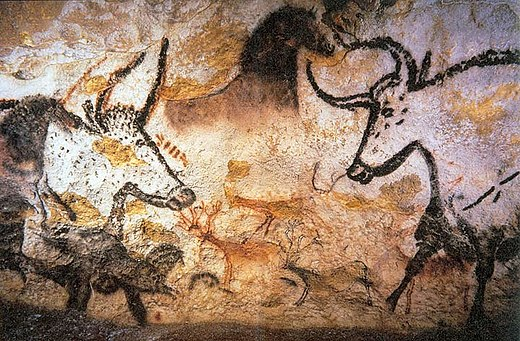
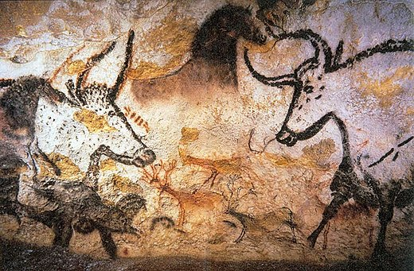

Histoire de l'art par Ernst Gombrich
Chapitre 1 Mysterieux débuts
Les débuts de l'art sont mysterieux. Chez les peuples préhistoriques et primitifs (l'Amérique ancienne) les peintures et sculptures
sont faites dans un but déterminé. Les édifices et autres batiments sont surtout considérés du point de vue utilitaire.Il faut s'intéresser
non seulement à l'aspect de beauté, mais surtout à quoi l'oeuvre était déstiné.
- les images que les primits créent leurs servent pour se protéger contre d'autres puissances.
En d'autres termes, dessins et sculptures sont des créations magiques.
- Les peuples primitifs ne distinguent pas l'image de la réalité.
- Les peintures et les sculptures se trouvent parfois dans les endroits obscures comme les cavernes ou les rochers.
Personne n'aurait rampé jusqu'aux entrailles mystérieuses de la terre dans le simple but de décorer un endroit
pressque inaccessible.
- En outre, à l'exception de certaines peintures dans la grotte de Lascaux, les peintures sont entassées les puissances
au-dessus des autres sans aucun ordre apparent.
- Le travail de l'artiste est souvent destiné à jouer un rôle des ces étranges coutumes. Ce qui compte c'est de savoir
si la sculpture ou la peinture accomplit l'oeuvre magique désirée.
- L'histoire de l'art n'est pas le récit d'une marche vers le progrès technique, mais l'histoire d'un enchaînement
de variations dans les idées et dans les exigences.
 
Grotte de Lascaux

Grotte de Lascaux
Pour savoir plus sur La Grotte de Lascaux
| 'Tête de noir' XII-XIV s. |
Représente probablement un souverain provenant d'Ifé (Nigeria)
|
| Linteau début XIX s. |
Provient d'une case de chef Maori |
| Dates |
Oeuvre |
| 'Tête de noir' XII-XIV s. |
Représente probablement un souverain provenant d'Ifé (Nigeria)
|
| Linteau début XIX s. |
Provient d'une case de chef Maori |
 |
Tête noire d'Ifé, représantant probablement un souverain provenant d'Ifé. |
Nigéria, XII - XIV s. |
<Skills
| Python |
Financial markets |
| English |
Polish |
My contact